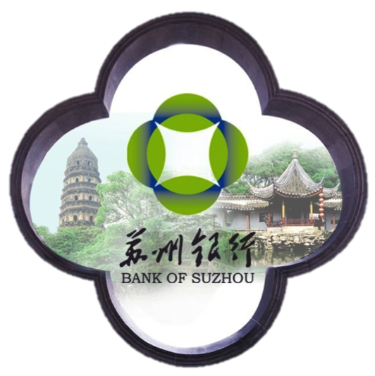
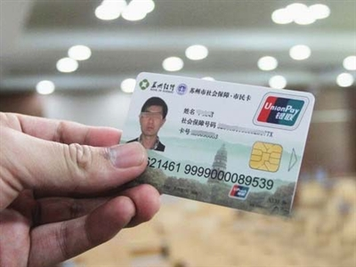

Visiting Bank of Suzhou
December 15, 2014A bit introduction of Bank of Suzhou:
Capital: Registered Capital is 3 billion; Total Asset is 201.333 billion and Capital adequacy Ratio is 12.31%
Personnel Structure: Headcount: 3843. Half of the personnel is Bachelor Degree
Framework: Head Quarter is in Suzhou and there are 13 branches in Jiangsu. One more department in Shanghai.
Ranking: According to The Bank 2013, Bank of Suzhou is ranked 357/1000 worldwide and top 33 in China.
Shareholder Structure: State-owned: 29%, Private 48.68%; National Person: 22.35%
From the presentation provided by the general manager, I get to understand more about China's business environment. Some highlights about this business trip:
Want to get loan from bank for your start-up ? Hmmm, not easy!
In China, State-Owned bank is more likely to provide funds and loans to State-Owned company rather than SME. In bank of Suzhou, most of the fund goes to State-Owned company, only a very small portion of the fund goes to SME. The reason is simple: state-Own company is less risky for investment.
If you know China well you must know that State-Owned company is very profitable. So all the banks in China are all very willing to provide loans and investment in State-Owned firms.
Compared with China bank, Singapore bank is much more "friendly" to SMEs. DBS, OCBC, UOB all have special schemas to provide opportunities, assistant and financial support for new start-ups. So from this point of view, Singaproe has a better environment for start-up companies. However, China has a much bigger market than Singapore.
Big Data ? How to benefit from it ?
From the presentation I get to know that Bank of Suzhou is also making use of data analysis in its operation. The main data collected are customers' transations, like how much amount does the customer spent at which place by which payment mode: credit card or online banking. Such information is put into a database for analysis. Bank of Suzhou is using such data to understand each customer's consumption habbit and credibility.
Link to what I learnt from school, I think visualisation is a good way to present the consumption habbit. A geography map with different color indicating the amount cumsumers spent in each location will be a useful tool to see which area/shops is more prosperous and which area is more popular. With such information, bank is able to make wise decision on any investment. Bank can also use the information collected from customer to design a saving/fund schema that is more attractive to customers.
Recently Bank of Suzhou releases a product called "Citizen Card". Such card is a combination of multiple cards including: ID card, credit card, Alipay, social security card, MRT card, bicycle ranking card and so on. This card is so convinient that each citizen needs only one card to perform all the transactions. I like this idea!